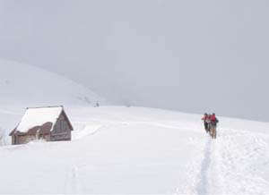
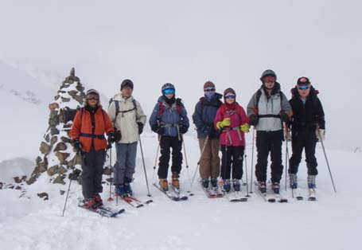
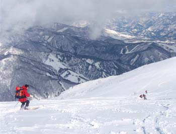
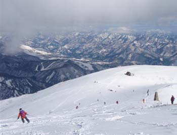
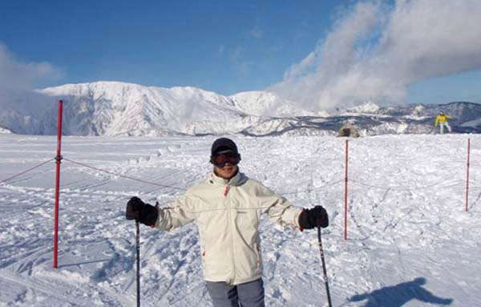
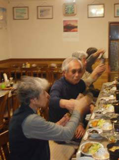
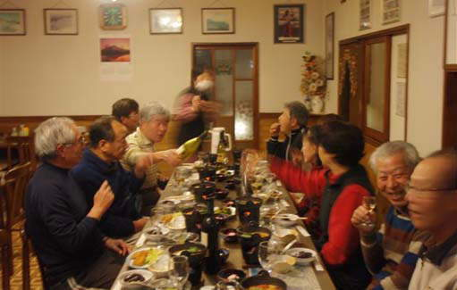

|
|||||||||||||||||||||||||||
|
八方尾根初滑り |
| 開 催 日 | ２００７年１２月２２〜２４日 | |||
| リーダー | 松澤 | |||
| 報 告 者 | 松澤、高井（延）、早川（英） | |||
| 参加者数 | 会員１０名、ゲスト４名 | |||
| 恒例の年末行事。 新しい道具の使い勝手や特性を知り、スキー技術の確認、体調を確かめるなど「初滑り」でやるべきことはたくさんある。 そうそう、年末最終の「宴会」も欠かせない。 |
| １日目 |
|
１２月２２日 曇、濃霧 雪が少なくて休止のリフトもあるが、初滑りトレーニングには不足はない。 ＪＲ、マイカーなどで到着した参加者が次々と兎平に上がってくる。 昨年の雪崩講習会参加の粂野和夫夫妻（ＪＡＣ，松本在住）も合流。 |
| ビデオ挿入予定 |
| ２日目 |
|
１２月２３日 雨、曇、晴 雨は朝まで降り続いた。好転の予報をあてにして、とにかく出かけることにした。 昨夜到着した奥村さん他３名はゲレンデで練習。 上を目指すのはL.松澤、SL.伊藤、岡田、高井夫妻、辻、野口、福士の８名。 突風が時々、濃いガスで見通しは悪い。 ９：５０、国民宿舎に登山届けを出して、シール登高を開始。 風が弱まって気温は高くなり、青空が見えてきた。 多くのスキーヤーやボーダーが登っていく。 私たちは、結構真面目に歩いて、下の樺でひと休み。 せめて、もう１ピッチと、上の樺の上段の平らに登り（１１：２０）、この北東斜面（このあたりでもっとも楽しいスロープ）に深いシュプールをつけた。往路を滑って、ゲレンデ組と待ち合わせの兎平１０９レストランへ１２：１０に到着した。 午後は、熱心班と昼寝組に分かれた。 夕食後は早川さんに撮影してもらったビデオで技術講評と酒。 「骨盤の前傾」は膝の曲げ（前傾）と足首の曲げが伴って意味がある、などいろんな議論。 |
|  | A |  |
| 八方尾根第２ケルン付近のシール登高 | 第２ケルンで記念写真 |
|  | A |  |
| 八方尾根滑降−骨盤は前傾しているか？ | 八方尾根滑降 |
|  |
| 午後から晴れ、白馬三山が見える |
|  | A |  |
| 民宿あずまでの夕食 | ||
| ３日目 |
|
１２月２４日 曇 |
|
＜感想と蛇足＞ |